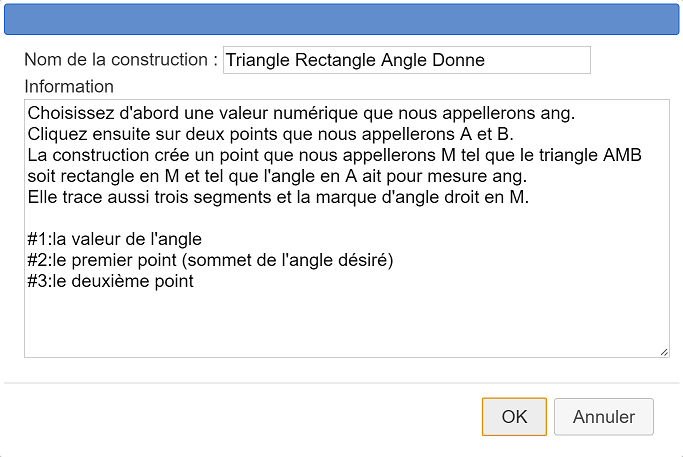

Nous allons expliquer sur un exemple comment créer une construction et l’utiliser.
Nous désirons créer une construction qui, étant donnés deux points A et B et une valeur numérique ang créera un triangle AMB rectangle en M tel que l'angle BÂM ait pour mesure ang.
Créez une nouvelle figure à l’aide du menu Fichier >> Nouvelle figure.
Si nécessaire, utilisez le menu Options >> Figure en cours pour que l’unité d’angle de la figure soit le degré (onglet Unité d’angle).
Utilisez l’icône  pour créer un calcul nommé ang qui contiendra comme formule 30.
pour créer un calcul nommé ang qui contiendra comme formule 30.
Créez deux points libres à l’aide de l’icône  et nommez-les A et B.
et nommez-les A et B.
Utilisez l’icône  pour créer le milieu du segment [AB].
pour créer le milieu du segment [AB].
A l’aide de l’icône  créez le cercle de centre ce milieu et passant par A.
créez le cercle de centre ce milieu et passant par A.
Créons maintenant l’image du point B par la rotation de centre A et d’angle ang.
Pour cela cliquez sur l’icône  . Cliquez ensuite sur A (centre de la rotation) qui se met à clignoter. Cliquez ensuite pour créer l’image de B par cette rotation.
. Cliquez ensuite sur A (centre de la rotation) qui se met à clignoter. Cliquez ensuite pour créer l’image de B par cette rotation.
Cliquez ensuite sur l’icône  pour créer la demi-droite d’origine A et passant par ce dernier point.
pour créer la demi-droite d’origine A et passant par ce dernier point.
A l’aide de l’outil d’intersection  créons l’intersection de cercle et de cette demi-droite. Pour cela cliquez sur le cercle et la demi-droite.
créons l’intersection de cercle et de cette demi-droite. Pour cela cliquez sur le cercle et la demi-droite.
Nous appellerons ce point C.
Utilisez l’icône  pour créer les segments [AB], [BC] et [CA] et l’icône
pour créer les segments [AB], [BC] et [CA] et l’icône  pour créer la marque d’angle droit de l’angle en C.
pour créer la marque d’angle droit de l’angle en C.
Notre figure est maintenant prête pour créer la construction.
Utilisez l'icône  puis Choix des éléments sources graphiques. Cliquer sur A puis B, puis cliquez sur le bouton STOP rouge en bas et à droite de la fenêtre.
puis Choix des éléments sources graphiques. Cliquer sur A puis B, puis cliquez sur le bouton STOP rouge en bas et à droite de la fenêtre.
Utilisez l'icône  puis Choix des éléments sources numériques.
puis Choix des éléments sources numériques.
Une boîte de dialogue s’ouvre. La liste de gauche contient les éléments de type calcul de la figure qui peuvent être choisis comme éléments sources.
Cliquez sur ang puis sur le bouton Insérer (vous pouvez aussi double-cliquer sur ang) puis validez.
Il nous reste à désigner quels sont les éléments finaux de notre figure qui sont dans cet exemple uniquement graphiques.
Remarquons que MathGraph32 ne permet de désigner que des objets finaux qui sont construits exclusivement à l’aide des objets sources.
Utilisez l'icône  puis Choisir les éléments finaux graphiques.
puis Choisir les éléments finaux graphiques.
Cliquez sur C, sur les trois segments et la marque d’angle puis cliquez sur le bouton STOP rouge.
Pour finaliser la construction, utilisez l'icône  puis Finir la construction en cours.
puis Finir la construction en cours.
Renseignez la boîte de dialogue qui apparaît comme ci-dessous.

A noter : le nom ne doit pas comporter de caractères accentués.
Expliquons les informations entrées pour la construction :
Les cinq premières lignes sont des informations générales sur la construction.
Les trois dernières serviront à indiquer à l'utilisateur quel est l'objet qu'il doit désigner lors de l'implémentation de la construction. Chaque indication est précédée du caractère # suivi du numéro de l'objet et d'un caractère : (deux points).
Attention : Lors de l'implémentation d'une construction, les objets non graphiques doivent être désignés en premier.
Si vous ne la supprimez pas, cette construction sera enregistrée avec votre figure mais il est préférable de l’enregistrer séparément sur votre disque dur par exemple.
Utilisez pour cela l'icône  et choisissez Enregistrer une construction de la figure.
et choisissez Enregistrer une construction de la figure.
Une boîte de dialogue s’ouvre vous présentant les constructions présentes dans la figure. Notre seule construction est déjà sélectionnée.
Cliquez sur le bouton Enregistrer pour enregistrer cette construction à l’endroit de votre choix (il est conseillé de garder le nom de la construction comme nom du fichier et d'éviter les caractères accentués).
Nous allons maintenant montrer comment implémenter cette construction dans une autre figure.
Utilisez l'icône  pour créer une nouvelle figure vierge (avec ou sans longueur unité).
pour créer une nouvelle figure vierge (avec ou sans longueur unité).
Utilisez l'icône  (dans la barre déroulante des calculs et curseurs) pour créer une variable nommée a de valeur minimale - 90, de valeur maximale 90, de pas d’incrémentation 10, de valeur actuelle 30 et cochez la case Dialogue associé..
(dans la barre déroulante des calculs et curseurs) pour créer une variable nommée a de valeur minimale - 90, de valeur maximale 90, de pas d’incrémentation 10, de valeur actuelle 30 et cochez la case Dialogue associé..
Créez deux points libres et nommez-les C et D.
Utilisez l'icône  et choisissez Incorporer une construction depuis un fichier. Allez chercher votre construction dans le dossier où vous l'avez précédemment enregistrée.
et choisissez Incorporer une construction depuis un fichier. Allez chercher votre construction dans le dossier où vous l'avez précédemment enregistrée.
Utilisez .l'icône  et choisissez Implémenter une construction de la figure.
et choisissez Implémenter une construction de la figure.
Une boîte de dialogue vous propose les constructions présentes, en l’occurrence celle que nous venons de charger qui est sélectionnée.
Cliquez sur OK.
Une boîte de dialogue s’ouvre dont le but est de choisir quelle est la valeur numérique de notre figure qui jouera le rôle du calcul que nous avions appelé ang (objet source non graphique).
Cliquez sur a dans la liste proposée. Validez la boîte de dialogue.
En haut et à droite de la fenêtre apparaît l'indication prévue : cliquez sur le premier point (sommet de l'angle désiré).
Cliquez ensuite sur les points C.
De même cliquez ensuite de D.
Vous voyez alors apparaître les objets finaux : les trois segments, le point et la marque d’angle.
En cliquant sur les boutons + et - de la petite boîte de dialogue associée à la variable vous pouvez modifier les valeurs de l’angle.
Remarquons que dans des constructions plus sophistiquées, on peut aussi avoir des objets finaux de type calcul.
En utilisant le protocole de la figure(icône  ) et en cochant la case Objets intermédiaires pour pourrez voir comment notre figure a été créée.
) et en cochant la case Objets intermédiaires pour pourrez voir comment notre figure a été créée.
Les objets intermédiaires ne peuvent pas être utilisés pour créer d’autres objets, sauf si vous utilisez l'icône  et choisissez Fusionner les constructions de la figure.
et choisissez Fusionner les constructions de la figure.
Une remarque importante :
Normalement, les points libres ne sont pas destinés à devenir des objets finaux. Mais dans certains cas, cela peut être utile.
Pour qu'un point libre soit un objet final, procéder de la façon suivante :
Choisir le point libre comme objet initial, ce qui permet de choisir les objets finaux construits avec ce point. Choisir aussi ce point libre dans les objets finaux (une confirmation vous sera demandée). Votre point libre sera alors un objet final.